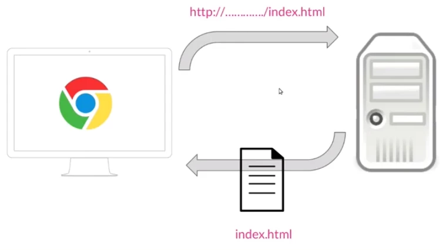

Fundamentos de HTML

Definicion
HTML5 es un estándar que sirve como referencia del software que conectacon la elaboración de páginas web en sus diferentes versiones,
define una estructura básica y un código (denominado HTML)
para la definición de contenido de una página web, como texto, imágenes, vídeos, juegos, entre otros…
Funcionamiento de HTML5
Desde el navegador se realiza una petición a un servidor,lo que se hace a través de una dirección del tipo http://..../index.html.
Después el servidor recupera de su disco duro esa página, la devuelve al navegador y la página se muestra. 